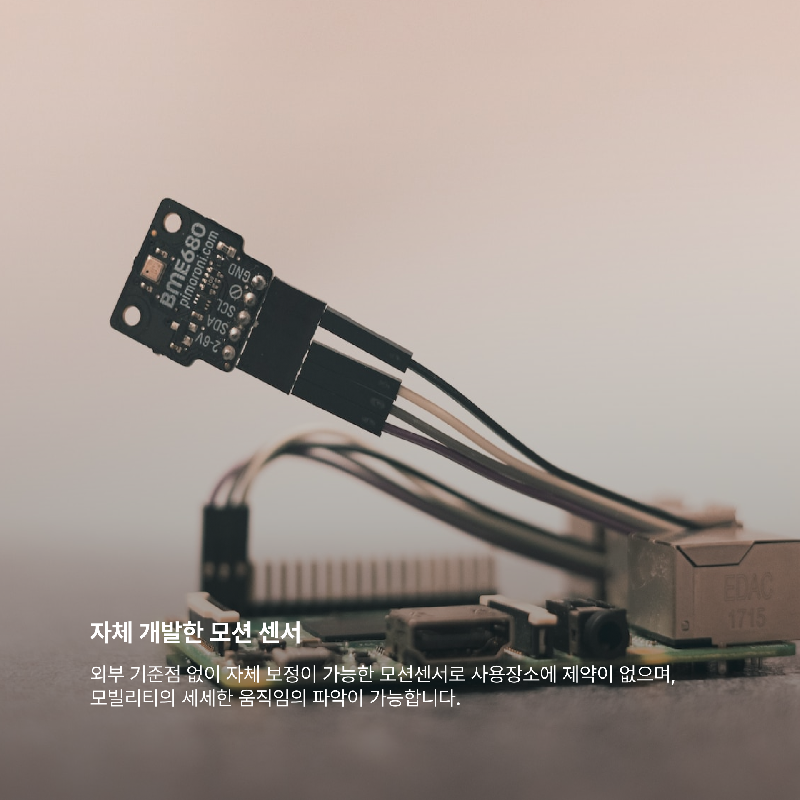
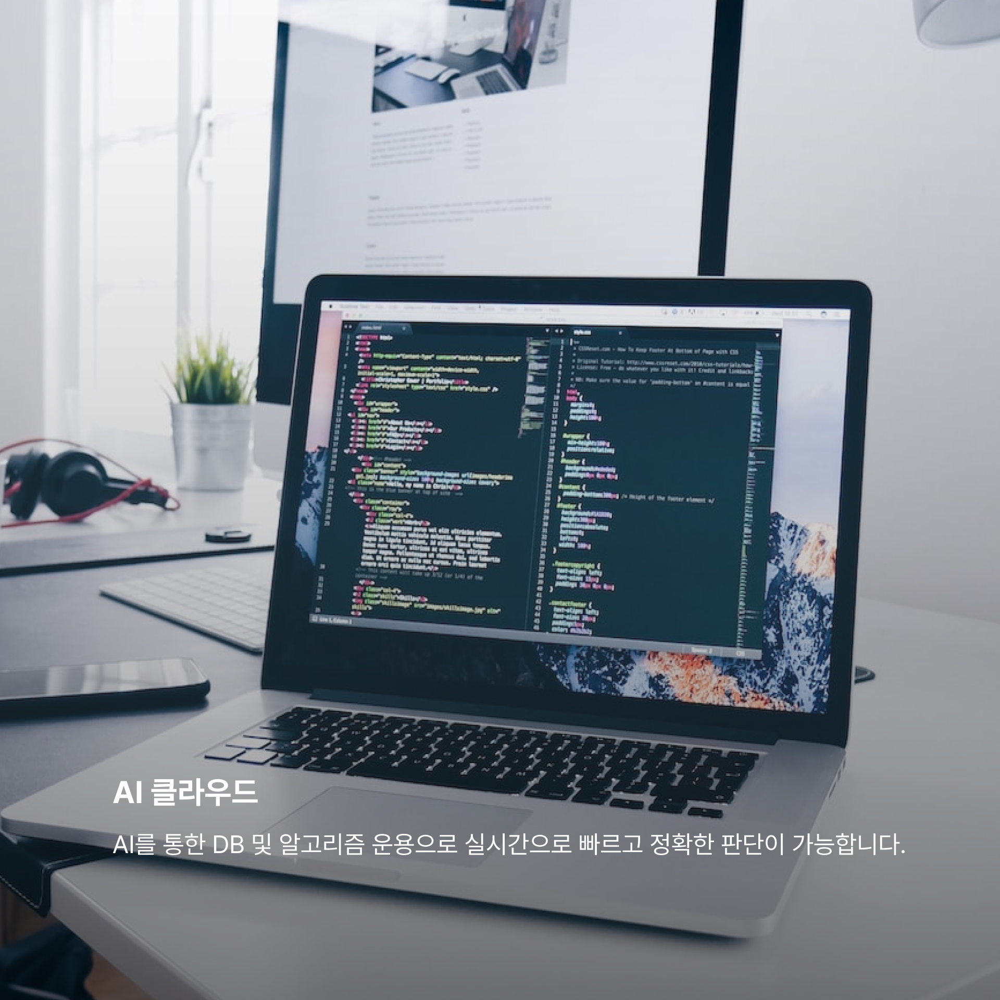

자체 개발한 모션 센서
외부 기준점 없이 자체 보정이 가능한 모션센서로 사용장소에 제약이 없으며,
모빌리티의 세세한 움직임의 파악이 가능합니다.

모빌리티의 세세한 움직임의 파악이 가능합니다.
AI 클라우드
AI를 통한 DB 및 알고리즘 운용으로 실시간으로 빠르고 정확한 판단이 가능합니다.

자체 개발한 모션 센서
카메라를 사용하지 않으며, 모션 정보를 활용하기 때문에 사생활 보호와 정밀한
분석이 동시에 가능합니다.
분석이 동시에 가능합니다.

안전운행 유도, 정확한 운행 이력 DATA의 지속적 확보